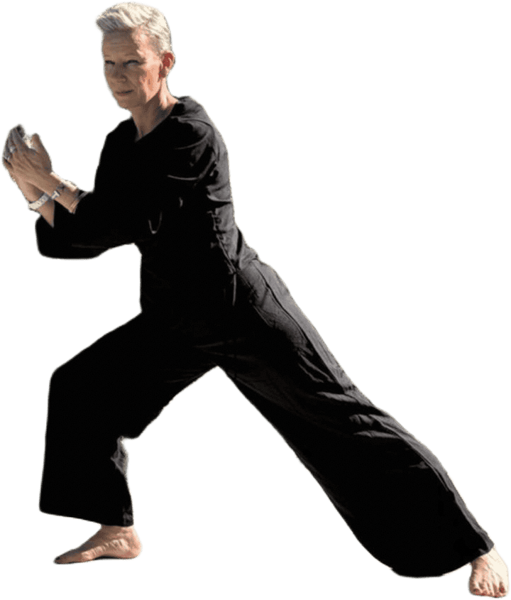
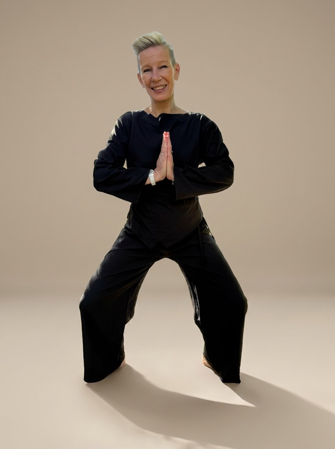

Tai-chi chuan
- Équilibre
- Coordination
- Prévention des chutes
Une nouvelle voie vers l'harmonie.
À Saint-Laurent-du-Var
Le Zenway

Zenway n'est pas quatre cours à choisir. C'est une seule discipline, où le tai-chi chuan, le yoga, le pilates et le qi gong se fondent dans un même enchaînement. Voici les quatre héritages qu'il réunit.
L'inscription se fait en ligne sur HelloAsso, qui gère l'adhésion à l'association et le règlement. Les montants en vigueur y sont indiqués au moment de l'inscription.
Connexion sécurisée, vous restez maître de vos données.
À imprimer et à remplir, puis à remettre à Béatrice avec une photo et un certificat médical.
Des extraits de séances et de moments partagés, publiés au fil de la saison.
Chargement des vidéos…
Portes ouvertes, rencontres et rendez-vous ponctuels de la section.
Aucun événement n'est programmé pour le moment. Les prochaines dates seront annoncées ici.
| Lundi | Mardi | Mercredi | Jeudi | Vendredi | |
|---|---|---|---|---|---|
| 17:45 – 18:45 | Zenway KMCS, 357 chemin des Iscles |
Mardi
17:45 – 18:45
Zenway KMCS, 357 chemin des Iscles
Les séances reprennent en septembre.
Pour rejoindre le groupe en cours de saison, contactez Béatrice.

Stationnement Stationnement gratuit sur place
Prochain rendez-vous